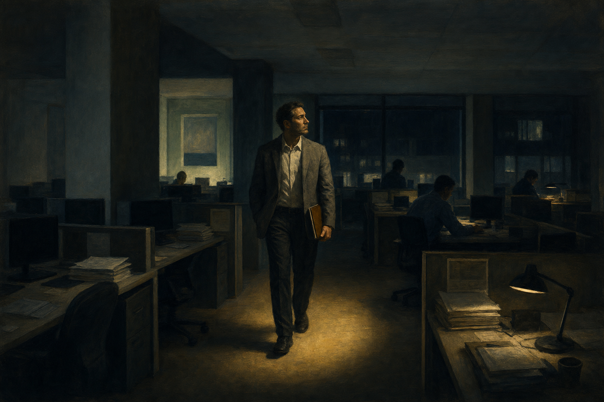
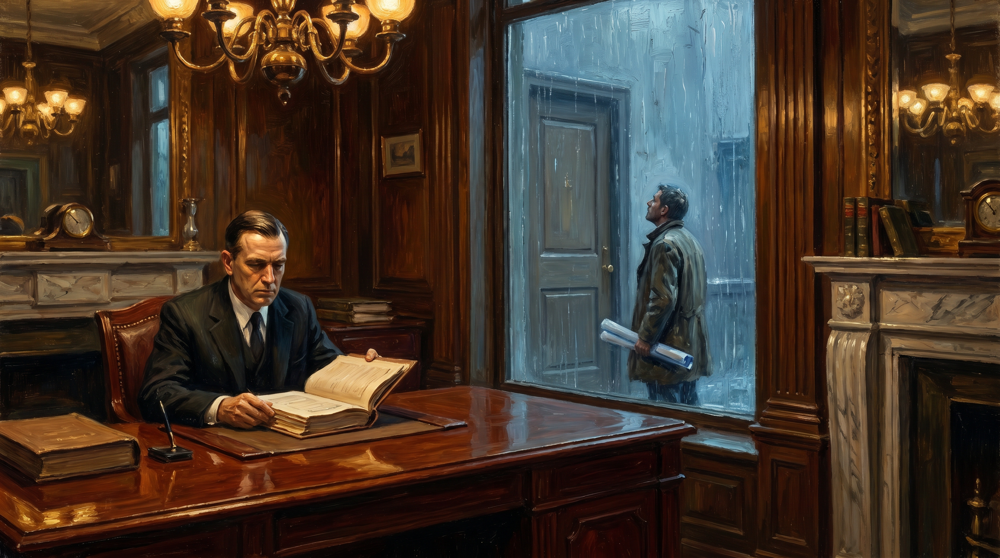
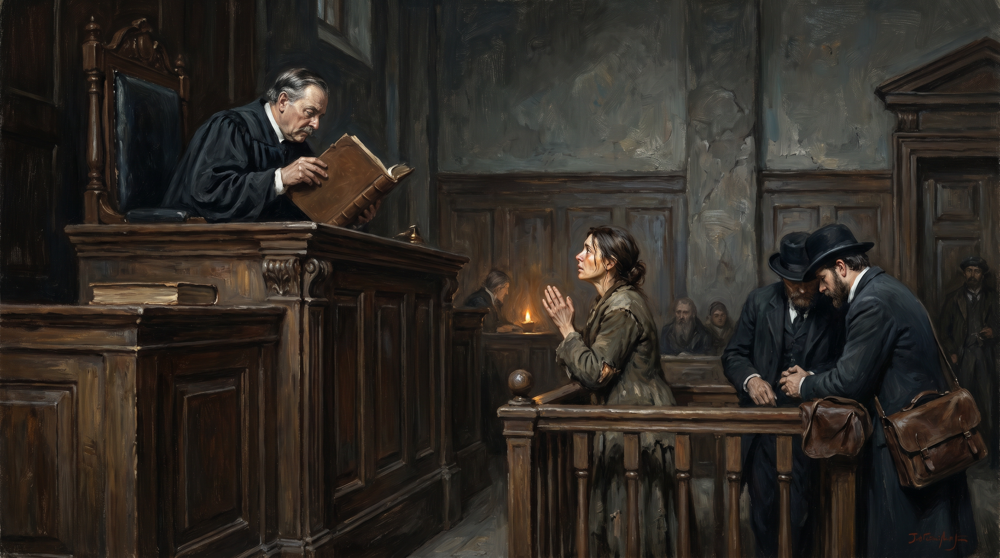

Tien stukken — één wet

00 · Voorwoord
Redactionele inleiding
Waar deze editie heen gaat en waarom

01 · Hoofdartikel
De wet van de papier-industrie
Hoe regels, verzekeringen en financiering het echte werk verdrongen

02 · Praktijk
De CEO en het oergevoel
Wat een leidinggevende verliest als hij alleen op cijfers stuurt

03 · Praktijk
De consultant bij het bijna-failliete bedrijf
Waarom een buitenstaander binnen drie dagen weet wat insiders niet kunnen zien

04 · Praktijk
Bij banken het oergevoel verloren
Waarom alleen wie het niet nodig heeft krediet krijgt

05 · Praktijk
De verzekeraar tegen het leven
Hoe risico-mijding zelf het grootste risico werd

06 · Praktijk
De toezichthouder die niets ziet
Inspectie zonder oergevoel is administratie van het verleden

07 · Praktijk
De rechter zonder kompas
Recht spreken op basis van paragrafen in plaats van mensen
08 · Filosofie
De diepere vraag
Waarom een hele samenleving haar oergevoel kwijtraakte

09 · Reflectie
Retrospectief
Wat deze editie samen vertelt